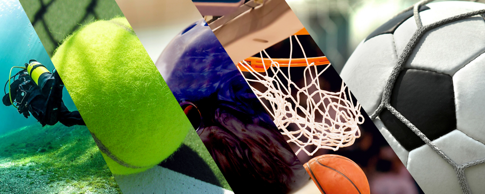

Présentation de la M2L La Maison des Ligues de Lorraine (M2L) a pour mission de fournir des espaces et des services aux différentes ligues sportives régionales et à d’autres structures hébergées. La M2L est une structure financée par le Conseil Régional de Lorraine dont l'administration est déléguée au Comité Régional Olympique et Sportif de Lorraine (CROSL).
Une maison au service du sport En décidant en 2000 de l’acquisition et la réhabilitation de la Maison Régionale des Sports de Lorraine à Tomblaine, la région Lorraine a voulu répondre à des besoins dea structuration du mouvement sportif lorrain, qui représente aujourd’hui 6 500 clubs, plus de 525 000 licenciés et près de 50 000 bénévoles. Véritable lieu de vie, cette Maison propose aux Ligues et Comités, des locaux fonctionnels situés à l’est de Nancy, permettant ainsi aux dirigeants, aux bénévoles et aux salariés d’échanger, de partager, de se former et de se regrouper dans des conditions optimales.